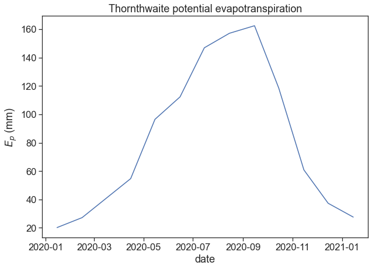
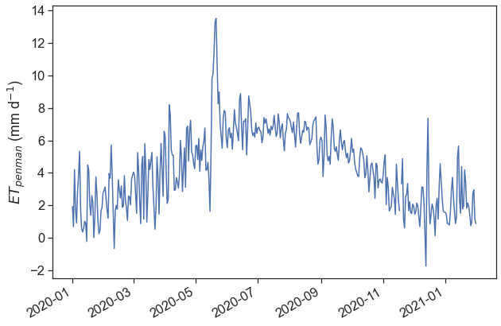
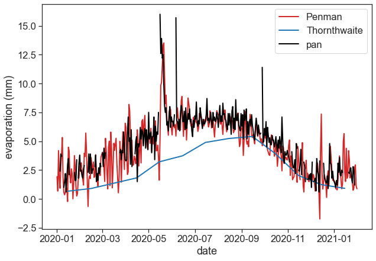
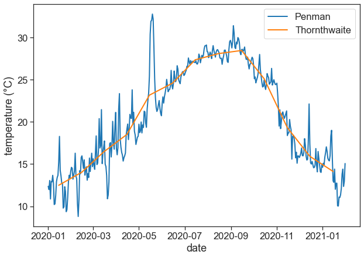

import matplotlib.pyplot as plt
import matplotlib
import numpy as np
import pandas as pd
from pandas.plotting import register_matplotlib_converters
register_matplotlib_converters() # datetime converter for a matplotlib
import seaborn as sns
sns.set(style="ticks", font_scale=1.5)10 Exercises
We will calculate the evapotranspiration using two methods: Thornthwaite and Penman.
10.1 Download data from the IMS
Go to the Israel Meteorological Service website, and download the following data:
- on the first page, choose all options and press continue.
- on the next page, choose the following date range: 01/01/2020 to 01/01/2021, then press continue.
- Choose station Bet Dagan (בית דגן 2523), then select (בחר), then continue.
- Choose option “by station” (לפי תחנות), then produce report.
- Download report as csv, call it “bet-dagan-3h.csv”.
- on the first page, choose all options and press continue.
- on the next page, choose the following date range: 01/01/2020 to 01/01/2021, then press continue.
- Choose station Bet Dagan Meuyeshet (בית דגן מאוישת 2520), then select (בחר), then continue.
- Choose option “by station” (לפי תחנות), then produce report.
- Download report as csv, call it “bet-dagan-day-pan.csv”.
- on the first page, choose all options, then on the bottom right option “radiation” (קרינה), choose kJ/m2, and then press continue.
- on the next page, choose the following date range: 01/01/2020 to 01/01/2021, then press continue.
- Choose station Bet Dagan Krina (בית דגן קרינה 2524), then select (בחר), then continue.
- Choose option “by station” (לפי תחנות), then produce report.
- Download report as csv, call it “bet-dagan-radiation.csv”.
10.2 Import relevant packages
10.3 import hourly data
df = pd.read_csv('bet-dagan-3h.csv', encoding = 'unicode_escape', na_values=["-"])
# find out what hebrew gibberish means: http://www.pixiesoft.com/flip/
name_conversion_dictionary = {"ùí úçðä": "station name",
"îñôø úçðä": "station number",
"úàøéê": "Date",
"ùòä-LST": "LST time",
"èîôøèåøä(C°)": "T",
"èîôøèåøä ìçä(C°)": "wet-bulb temperature (°C)",
"èîôøèåøú ð÷åãú äèì(C°)": "dew_point_T",
"ìçåú éçñéú(%)": "relative humidity (%)",
"îäéøåú äøåç(m/s)": "wind_speed",
"ëéååï äøåç(îòìåú)": "wind direction (degrees)",
"ìçõ áâåáä äúçðä(hPa)": "Pressure",
"ìçõ áâåáä ôðé äéí(hPa)": "pressure at sea level (hPa)",
"""äúàãåú éåîéú îâéâéú ñåâ à'(î"î)""": "pan evaporation (mm)",
"ñåâ ÷øéðä()": "radiation type",
}
# units
# T = temperature (°C)
# dew_point_T = dew point temperature (°C)
# wind_speed = wind speed (m/s)
# Pressure = pressure at station height (hPa = 0.1 kPa)
df = df.rename(columns=name_conversion_dictionary)
df['timestamp'] = df['Date'] + ' ' + df['LST time']
df['timestamp'] = pd.to_datetime(df['timestamp'], dayfirst=True)
df = df.set_index('timestamp')
df| station name | station number | Date | LST time | T | wet-bulb temperature (°C) | dew_point_T | relative humidity (%) | wind_speed | wind direction (degrees) | ... | pressure at sea level (hPa) | ëîåú òððéí ëåììú(÷åã) | ëîåú òððéí ðîåëéí(÷åã) | âåáä áñéñ òððéí ðîåëéí(÷åã) | ñåâ äòððéí äðîåëéí(÷åã) | ñåâ äòððéí äáéðåðééí(÷åã) | ñåâ äòððéí äâáåäéí(÷åã) | îæâ àååéø ðåëçé(÷åã) | îæâ àååéø ùçìó(÷åã) | øàåú àô÷éú(÷åã) | |
|---|---|---|---|---|---|---|---|---|---|---|---|---|---|---|---|---|---|---|---|---|---|
| timestamp | |||||||||||||||||||||
| 2020-01-01 02:00:00 | áéú ãâï ... | 2523 | 01-01-2020 | 02:00 | 7.9 | 7.2 | 6.4 | 90 | 1.7 | 117.0 | ... | 1018.8 | NaN | NaN | NaN | NaN | NaN | NaN | NaN | NaN | NaN |
| 2020-01-01 05:00:00 | áéú ãâï ... | 2523 | 01-01-2020 | 05:00 | 7.5 | 7.0 | 6.4 | 93 | 1.2 | 116.0 | ... | 1018.1 | NaN | NaN | NaN | NaN | NaN | NaN | NaN | NaN | NaN |
| 2020-01-01 08:00:00 | áéú ãâï ... | 2523 | 01-01-2020 | 08:00 | 8.6 | 8.3 | 8.0 | 96 | 1.1 | 107.0 | ... | 1018.2 | NaN | NaN | NaN | NaN | NaN | NaN | NaN | NaN | NaN |
| 2020-01-01 11:00:00 | áéú ãâï ... | 2523 | 01-01-2020 | 11:00 | 15.9 | 13.1 | 10.6 | 71 | 2.4 | 196.0 | ... | 1017.4 | NaN | NaN | NaN | NaN | NaN | NaN | NaN | NaN | NaN |
| 2020-01-01 14:00:00 | áéú ãâï ... | 2523 | 01-01-2020 | 14:00 | 18.1 | 14.0 | 10.4 | 61 | 2.8 | 264.0 | ... | 1015.3 | NaN | NaN | NaN | NaN | NaN | NaN | NaN | NaN | NaN |
| ... | ... | ... | ... | ... | ... | ... | ... | ... | ... | ... | ... | ... | ... | ... | ... | ... | ... | ... | ... | ... | ... |
| 2021-01-31 11:00:00 | áéú ãâï ... | 2523 | 31-01-2021 | 11:00 | 19.0 | 13.7 | 8.9 | 52 | 5.6 | 235.0 | ... | 1017.3 | NaN | NaN | NaN | NaN | NaN | NaN | NaN | NaN | NaN |
| 2021-01-31 14:00:00 | áéú ãâï ... | 2523 | 31-01-2021 | 14:00 | 19.2 | 14.7 | 11.0 | 59 | 4.6 | 252.0 | ... | 1016.7 | NaN | NaN | NaN | NaN | NaN | NaN | NaN | NaN | NaN |
| 2021-01-31 17:00:00 | áéú ãâï ... | 2523 | 31-01-2021 | 17:00 | 18.2 | 14.8 | 12.2 | 68 | 0.8 | 203.0 | ... | 1017.0 | NaN | NaN | NaN | NaN | NaN | NaN | NaN | NaN | NaN |
| 2021-01-31 20:00:00 | áéú ãâï ... | 2523 | 31-01-2021 | 20:00 | 13.1 | 12.3 | 11.7 | 91 | 1.2 | 79.0 | ... | 1018.2 | NaN | NaN | NaN | NaN | NaN | NaN | NaN | NaN | NaN |
| 2021-01-31 23:00:00 | áéú ãâï ... | 2523 | 31-01-2021 | 23:00 | 10.8 | 10.6 | 10.3 | 97 | 1.7 | 111.0 | ... | 1018.9 | NaN | NaN | NaN | NaN | NaN | NaN | NaN | NaN | NaN |
3172 rows × 21 columns
10.4 import daily data with pan evaporation
df2 = pd.read_csv('bet-dagan-day-pan.csv', encoding = 'unicode_escape', na_values=["-"])
df2 = df2.rename(columns=name_conversion_dictionary)
df2['Date'] = pd.to_datetime(df2['Date'], dayfirst=True)
df2 = df2.set_index('Date')
df2| station name | station number | èîôøèåøú î÷ñéîåí(C°) | èîôøèåøú îéðéîåí(C°) | èîôøèåøú îéðéîåí ìéã ä÷ø÷ò(C°) | îùê æäéøú ùîù(ã÷åú) | pan evaporation (mm) | ÷åã äúàãåú éåîéú() | |
|---|---|---|---|---|---|---|---|---|
| Date | ||||||||
| 2020-01-01 | áéú ãâï îàåéùú ... | 2520 | NaN | NaN | NaN | NaN | 0.8 | 0.0 |
| 2020-01-02 | áéú ãâï îàåéùú ... | 2520 | NaN | NaN | NaN | NaN | NaN | NaN |
| 2020-01-03 | áéú ãâï îàåéùú ... | 2520 | NaN | NaN | NaN | NaN | NaN | NaN |
| 2020-01-04 | áéú ãâï îàåéùú ... | 2520 | NaN | NaN | NaN | NaN | NaN | NaN |
| 2020-01-05 | áéú ãâï îàåéùú ... | 2520 | NaN | NaN | NaN | NaN | 2.4 | 0.0 |
| ... | ... | ... | ... | ... | ... | ... | ... | ... |
| 2021-01-27 | áéú ãâï îàåéùú ... | 2520 | NaN | NaN | NaN | NaN | 2.5 | 0.0 |
| 2021-01-28 | áéú ãâï îàåéùú ... | 2520 | NaN | NaN | NaN | NaN | 1.2 | 0.0 |
| 2021-01-29 | áéú ãâï îàåéùú ... | 2520 | NaN | NaN | NaN | NaN | NaN | NaN |
| 2021-01-30 | áéú ãâï îàåéùú ... | 2520 | NaN | NaN | NaN | NaN | NaN | NaN |
| 2021-01-31 | áéú ãâï îàåéùú ... | 2520 | NaN | NaN | NaN | NaN | 2.6 | 0.0 |
397 rows × 8 columns
10.5 import daily data with radiation
df3 = pd.read_csv('bet-dagan-radiation.csv', encoding = 'unicode_escape', na_values=["-"])
df3 = df3.rename(columns=name_conversion_dictionary)
df3['Date'] = pd.to_datetime(df3['Date'], dayfirst=True)
df3 = df3.set_index('Date')
df3 = df3.replace({"éùéøä": "direct",
"îôåæøú": "diffuse",
"âìåáàìéú": "global"})
df3['daily_radiation_MJ_per_m2_per_day'] = df3.iloc[:, 3:].sum(axis=1)/1000
df_radiation = df3.loc[df3["radiation type"] == "global", "daily_radiation_MJ_per_m2_per_day"].to_frame()
df_radiation| daily_radiation_MJ_per_m2_per_day | |
|---|---|
| Date | |
| 2020-01-01 | 10.0296 |
| 2020-01-02 | 4.3128 |
| 2020-01-03 | 11.6748 |
| 2020-01-04 | 1.6452 |
| 2020-01-05 | 6.8544 |
| ... | ... |
| 2021-01-27 | 12.2652 |
| 2021-01-28 | 7.1640 |
| 2021-01-29 | 7.2936 |
| 2021-01-30 | 9.3276 |
| 2021-01-31 | 13.5468 |
396 rows × 1 columns
10.6 Part 1: Thornthwaite estimation
\[ E = 16\left[ \frac{10\,T^\text{monthly mean}}{I} \right]^a, \]
where
\[ I = \sum_{i=1}^{12} \left[ \frac{T_i^\text{monthly mean}}{5} \right]^{1.514}, \]
and
\[ \begin{align} a &= 6.75\times 10^{-7}I^3 \\ &- 7.71\times 10^{-5}I^2 \nonumber\\ &+ 1.792\times 10^{-2}I \nonumber\\ &+ 0.49239 \nonumber \end{align} \]
- \(E\) is the monthly potential ET (mm)
- \(T_\text{monthly mean}\) is the mean monthly temperature in °C
- \(I\) is a heat index
- \(a\) is a location-dependent coefficient
From df, make a new dataframe, df_th, that stores monthly temperatures means. Use resample function.
# monthly data
df_th = (df['T'].resample('MS') # MS assigns mean to first day in the month
.mean()
.to_frame()
)
# we now add 14 days to the index, so that all monthly data is in the middle of the month
# not really necessary, makes plot look better
df_th.index = df_th.index + pd.DateOffset(days=14)
df_th| T | |
|---|---|
| timestamp | |
| 2020-01-15 | 12.484274 |
| 2020-02-15 | 14.046983 |
| 2020-03-15 | 16.439113 |
| 2020-04-15 | 18.512500 |
| 2020-05-15 | 23.166532 |
| 2020-06-15 | 24.600000 |
| 2020-07-15 | 27.353226 |
| 2020-08-15 | 28.090323 |
| 2020-09-15 | 28.462500 |
| 2020-10-15 | 25.120161 |
| 2020-11-15 | 19.308475 |
| 2020-12-15 | 15.916129 |
| 2021-01-15 | 14.123790 |
Calculate \(I\), then \(a\), and finally \(E_p\). Add \(E_p\) as a new column in df_th.
# Preparing "I" for the Thornthwaite equation
I = np.sum( (df_th['T']/5)**(1.514) )
# Preparing "a" for the Thornthwaite equation
a = (+6.75e-7 * I**3
-7.71e-5 * I**2
+1.792e-2 * I
+ 0.49239)
# The final Thornthwaite model for monthly potential ET (mm)
df_th['Ep'] = 16*((10*df_th['T']/I)**a)
df_th| T | Ep | |
|---|---|---|
| timestamp | ||
| 2020-01-15 | 12.484274 | 20.163427 |
| 2020-02-15 | 14.046983 | 27.179636 |
| 2020-03-15 | 16.439113 | 40.472053 |
| 2020-04-15 | 18.512500 | 54.671821 |
| 2020-05-15 | 23.166532 | 96.461219 |
| 2020-06-15 | 24.600000 | 112.296873 |
| 2020-07-15 | 27.353226 | 146.898516 |
| 2020-08-15 | 28.090323 | 157.128632 |
| 2020-09-15 | 28.462500 | 162.453109 |
| 2020-10-15 | 25.120161 | 118.406386 |
| 2020-11-15 | 19.308475 | 60.820862 |
| 2020-12-15 | 15.916129 | 37.291178 |
| 2021-01-15 | 14.123790 | 27.557481 |
Plot the Thornthwaite ET that you calculated.
fig, ax = plt.subplots(1, figsize=(10,7))
ax.plot(df_th['Ep'])
ax.set(xlabel="date",
ylabel=r"$E_p$ (mm)",
title="Thornthwaite potential evapotranspiration");
10.7 Part 2: Penman
The Penman model is almost entirely a theory based formula for predicting evaporative flux. It can run on a much finer timescale, and requires a much wider variety of data than most models. In addition to temperature, the Penman functions on measurements of radiation, wind speed, elevation above sea level, vapour-pressure deficit, and heat flux density to the ground.
\[ E = \frac{1}{\lambda}\left[ \frac{\Delta}{\Delta+\gamma}Q_{ne}+ \frac{\gamma}{\Delta+\gamma}E_A \right], \]
where \(Q_n\) is the available energy flux density
\[ Q_n = R_n - G, \]
and \(E_A\) is the drying power of the air
\[ E_A = 6.43\cdot f(u)\cdot\text{VPD}. \]
\[ \gamma = \frac{c_p\, P}{\lambda\cdot MW_\text{ratio}} \]
\[ P = 101.3-0.01055 H \]
\[ \lambda = 2.501 - 2.361\times 10^{-3}\,T \]
- \(MW_\text{ratio}=0.622\): ratio molecular weight of water vapor/dry air
- \(P\): atmospheric pressure (kPa). Can be either measured or inferred from station height above sea level (m).
- \(\lambda\): latent heat of water vaporization (MJ kg\(^{-1}\))
\[ R_n = (1-\alpha)R_s\!\! \downarrow -R_b \!\! \uparrow, \]
where \(\alpha\) (dimensionless) is the albedo. The net outgoing thermal radiation \(R_b\) is given by
\[ R_b = \left( a\frac{R_s}{R_{so}+b} \right)R_{bo}, \]
where \(R_{so}\) is the solar radiation on a cloudless day, and it depends on latitude and day of the year. \(R_{bo}\) is given by
\[ R_{bo} = \epsilon\, \sigma\, T^4_{Kelvin}, \]
where \(\sigma=4.903\times 10^{-9}\) MJ m\(^{-2}\) d\(^{-1}\) K\(^{-4}\), and \(\epsilon\) is net net emissivity:
\[ \epsilon=-0.02+0.261 \exp\left(-7.77\times10^{-4}T_{Celcius}^2\right). \]
The parameters \(a\) and \(b\) are determined for the climate of the area:
- \(a=1.0\), \(b=0.0\) for humid areas,
- \(a=1.2\), \(b=-0.2\) for arid areas,
- \(a=1.1\), \(b=-0.1\) for semihumid areas.
\[ G = 4.2\frac{T_{i+1}-T_{i-1}}{\Delta t} \]
\[ \text{VPD} = e_s - e_d. \]
For temperatures ranging from 0 to 50 °C, the saturation vapor pressure can be calculated with
\[ e_s = \exp \left[ \frac{16.78\, T -116.9}{T+237.3} \right], \]
and the actual vapor pressure is given by
\[ e_d = e_s \frac{RH}{100}, \]
\[ \Delta = \frac{\text{d} e_s}{\text{d}T} = e_s(T)\cdot \frac{4098.79}{(T+237.3)^2}. \]
\[ f(u) = 0.26(1.0 + 0.54\, u_2) \]
The various components of the equations above are:
\[ \Delta = 0.200 \cdot (0.00738\,T + 0.8072)^7 - 0.000116 \]
\[ \gamma = \frac{c_p\, P}{0.622 \lambda} \]
\[ P = 101.3-0.01055 H \]
\[ \lambda = 2.501 - 2.361\times 10^{-3}\,T \]
\[ f_e(u) = 1.0 + 0.53\, u_2 \]
\[ G = 4.2\frac{T_{i+1}-T_{i-1}}{\Delta t} \]
\[ e_s = \exp \left[ \frac{16.78\, T -116.9}{T+237.3} \right] \]
\[ e_d = e_s \frac{RH}{100} \] where \(\Delta t\) is the time in days between midpoints of time periods \(i+1\) and \(i−1\), and \(T\) is the air temperature (°C).
- \(\Delta\): slope of the saturation water vapor pressure curve (kPa °C\(^{-1}\))
- \(\gamma\): psychrometric constant (kPA °C\(^{-1}\))
- \(c_p=0.001013\): specific heat of water at constant pressure (MJ kg\(^{-1}\) °C\(^{-1}\))
- \(P\): atmospheric pressure (kPa)
- \(H\): elevation above sea level (m)
- \(\lambda\): latent heat of vaporization (MJ kg\(^{-1}\))
- \(R_n\): net radiation (MJ m\(^{-2} d^{-1}\))
- \(G\): heat flux density to the ground (MJ m\(^{-2} d^{-1}\))
- \(u_{2}\): wind speed measured 2 m above ground (m s\(^{-1}\))
- \(e_{s} - e_{d}\): vapor pressure deficit (kPa)
- \(e_{s}\): saturation vapor pressure (kPa)
- \(e_{d}\): actual vapor pressure (kPa)
Calculate daily means for the following columns: temperature T, wind speed wind_speed, atmospheric pressure Pressure, and relative humidity relative humidity (%). Remember that pressure data was given in hectopascal, 1 hPa = 0.1 kPa. Store all the calculated values in a new dataframe, called df_pen.
# Resampling hourly data over same day and taking mean, to obtain daily averages
df_pen = (df['T'].resample('D')
.mean()
.to_frame()
)
df_pen['dew_point'] = (df['dew_point_T'].resample('D')
.mean()
)
df_pen['u'] = (df['wind_speed'].resample('D')
.mean()
)
df_pen['P'] = (df['Pressure'].resample('D')
.mean()
)/10
df_pen['RH'] = (df['relative humidity (%)'].resample('D')
.mean()
)
df_pen| T | dew_point | u | P | RH | |
|---|---|---|---|---|---|
| timestamp | |||||
| 2020-01-01 | 12.3625 | 9.0625 | 1.5250 | 101.30875 | 81.500 |
| 2020-01-02 | 11.9750 | 9.8250 | 1.9250 | 101.20125 | 87.000 |
| 2020-01-03 | 13.0500 | 4.9750 | 5.1750 | 101.37125 | 58.500 |
| 2020-01-04 | 10.8625 | 6.6875 | 5.5625 | 101.15500 | 78.375 |
| 2020-01-05 | 12.9375 | 9.2125 | 4.5625 | 101.23625 | 79.125 |
| ... | ... | ... | ... | ... | ... |
| 2021-01-27 | 13.8125 | 8.2375 | 1.8875 | 100.83750 | 72.375 |
| 2021-01-28 | 14.4000 | 10.2250 | 3.5250 | 101.12750 | 76.750 |
| 2021-01-29 | 12.3500 | 7.9125 | 5.0250 | 101.22125 | 75.250 |
| 2021-01-30 | 12.9625 | 7.6500 | 4.4250 | 101.49500 | 71.375 |
| 2021-01-31 | 15.0625 | 8.3125 | 3.7500 | 101.32500 | 66.000 |
397 rows × 5 columns
With average \(T\) for every day of the year, we can now calculate daily latent heat of vaporization \(\lambda\), the slope of the saturation-vapor pressure-temperature curve \(\Delta\), and the heat flux density to the ground \(G\). Add each of these to dataframe df_pen.
Calculate also the wind function using the data for wind speed, and add this to df_pen.
def lambda_latent_heat(T):
"""daily latent heat of vaporization (MJ/kg)"""
return 2.501 - 2.361e-3*T
def Delta(T):
"""slope of saturation-vapor curve (kPa/°C)"""
return 0.2000*(0.00738*T + 0.8072)**7 - 0.000116
def G(T):
"""heat flux density to the ground, G (MJ/m2/d)"""
return 4.2*np.gradient(T.values)
cp = 0.001013 # (MJ kg−1 °C−1)
df_pen['lambda'] = lambda_latent_heat(df_pen['T'])
df_pen['Delta'] = Delta(df_pen['T'])
df_pen['G'] = G(df_pen['T'])
df_pen['gamma'] = (cp*df_pen['P'])/(0.622*df_pen['lambda'])
df_pen['f_wind'] = 1.0 + 0.53 * df_pen['u']
df_pen| T | dew_point | u | P | RH | lambda | Delta | G | gamma | f_wind | |
|---|---|---|---|---|---|---|---|---|---|---|
| timestamp | ||||||||||
| 2020-01-01 | 12.3625 | 9.0625 | 1.5250 | 101.30875 | 81.500 | 2.471812 | 0.094385 | -1.62750 | 0.066750 | 1.808250 |
| 2020-01-02 | 11.9750 | 9.8250 | 1.9250 | 101.20125 | 87.000 | 2.472727 | 0.092300 | 1.44375 | 0.066654 | 2.020250 |
| 2020-01-03 | 13.0500 | 4.9750 | 5.1750 | 101.37125 | 58.500 | 2.470189 | 0.098185 | -2.33625 | 0.066835 | 3.742750 |
| 2020-01-04 | 10.8625 | 6.6875 | 5.5625 | 101.15500 | 78.375 | 2.475354 | 0.086530 | -0.23625 | 0.066553 | 3.948125 |
| 2020-01-05 | 12.9375 | 9.2125 | 4.5625 | 101.23625 | 79.125 | 2.470455 | 0.097554 | 4.25250 | 0.066739 | 3.418125 |
| ... | ... | ... | ... | ... | ... | ... | ... | ... | ... | ... |
| 2021-01-27 | 13.8125 | 8.2375 | 1.8875 | 100.83750 | 72.375 | 2.468389 | 0.102551 | 4.77750 | 0.066532 | 2.000375 |
| 2021-01-28 | 14.4000 | 10.2250 | 3.5250 | 101.12750 | 76.750 | 2.467002 | 0.106028 | -3.07125 | 0.066760 | 2.868250 |
| 2021-01-29 | 12.3500 | 7.9125 | 5.0250 | 101.22125 | 75.250 | 2.471842 | 0.094317 | -3.01875 | 0.066691 | 3.663250 |
| 2021-01-30 | 12.9625 | 7.6500 | 4.4250 | 101.49500 | 71.375 | 2.470396 | 0.097694 | 5.69625 | 0.066911 | 3.345250 |
| 2021-01-31 | 15.0625 | 8.3125 | 3.7500 | 101.32500 | 66.000 | 2.465437 | 0.110070 | 8.82000 | 0.066933 | 2.987500 |
397 rows × 10 columns
It’s time to calculate net radiation \(R_n\). The monthly mean solar radiation \(R_{so}\) for latitude 30 degrees is
[17.46, 21.65, 25.96, 29.85,
32.11, 33.20, 32.66, 30.44,
26.67, 22.48, 18.30, 16.04](MJ m\(^{-2}\) d\(^{-1}\))
(Israel’s latitude is ~ 31 degrees).
- Add a new column
Rso_monthlytodf_pen, where each day has the appropriate \(R_{so}\) given by the data above. - Add a new columns
Rswith the global radiation data imported in the 3rd file.
# Rso: mean solar radiation from a cloudless sky (based on latitude)
# MJ/m2/d
Rso_monthly = np.array([17.46, 21.65, 25.96, 29.85,
32.11, 33.20, 32.66, 30.44,
26.67, 22.48, 18.30, 16.04])
# create empty columns
df_pen["Rso_monthly"] = ""
# every day in the month will have the same values for Rso
for i in range(12):
df_pen.loc[df_pen.index.month==(i+1), "Rso_monthly"] = Rso_monthly[i]
df_pen["Rs"] = df_radiation["daily_radiation_MJ_per_m2_per_day"]
fig, ax = plt.subplots(1, figsize=(10,7))
ax.plot(df_pen['Rso_monthly'])
plt.gcf().autofmt_xdate()
ax.set_ylabel(r"$R_{so}$ (MJ m$^{-2} d^{-1}$)")Text(0, 0.5, '$R_{so}$ (MJ m$^{-2} d^{-1}$)')
middle = pd.date_range(start='1/1/2020', periods=13, freq='MS') + pd.DateOffset(days=14)
new = df_pen.loc[middle, 'Rso_monthly'].astype('float')
new
df_i = (pd.DataFrame(data=new, index=new.index) #create the dataframe
.resample("D") #resample daily
.interpolate(method='time') #interpolate by time
)
fig, ax = plt.subplots(1, figsize=(10,7))
ax.plot(df_i, 'o')
ax.plot(df_pen['Rso_monthly'])
plt.gcf().autofmt_xdate()
ax.set_title("time interpolation")
ax.set_ylabel(r"$R_{so}$ (MJ m$^{-2} d^{-1}$)")Text(0, 0.5, '$R_{so}$ (MJ m$^{-2} d^{-1}$)')
from: Ward & Trimble, “Environmental Hydrology”, 2nd Edition, page 99.
- Calculate \[
R_{bo} = \epsilon\, \sigma\, T^4_{Kelvin},
\] where \[
\epsilon=-0.02+0.261 \exp\left(-7.77\times10^{-4}T_{Celcius}^2\right),
\]
\[ \sigma=4.903\times 10^{-9} \text{ MJ m$^{-2}$ d$^{-1}$ K$^{-4}$}, \] and \[ T_{Kelvin}=T_{Celcius}+273.15 \] - Calculate \[
R_b = \left( a\frac{R_s}{R_{so}+b} \right)R_{bo},
\] where
- for humid areas, \(a=1.0\) and \(b=0\),
- for arid areas, \(a=1.2\) and \(b=-0.2\),
- for semihumid areas, \(a=1.1\) and \(b=-0.1\)
- for humid areas, \(a=1.0\) and \(b=0\),
- Finally, calculate \[
R_n = (1-\alpha)R_s\!\! \downarrow -R_b \!\! \uparrow,
\] where
- \(\alpha= 0.23\) for most green crops with a full cover
- \(\alpha= 0.04\) for fresh asphalt
- \(\alpha= 0.12\) for worn-out asphalt
- \(\alpha= 0.55\) for fresh concrete
Add a new column Rn to df_pen dataframe.
# Stefan-Boltzmann constant
sigma = 4.903e-9
emissivity = -0.02 + 0.261 * np.exp(-7.77e-4 * df_pen['T']**2)
# Rbo: net longwave radiation for clear skies, otherwise known as diffuse radiation or emitted radiation from the
# atmosphere - 'how hot is it?'
Rbo = emissivity*sigma*((df_pen['T']+273.15)**4)
# net outgoing long-wave radiation (note: Rs/Rso = proportion of how clear the day is)
# for humid areas, a=1.0 and b=0
# for arid areas, a=1.2 and b=-0.2
# for semihumid areas, a=1.1 and b=-0.1
a = 1.2
b = -0.2
Rb = (a*df_pen['Rs']/df_pen['Rso_monthly'] + b)*Rbo
# α is the albedo, or short-wave reflectance (dimensionless)
alpha = 0.23
# net radiation
Rn = (1 - alpha) * df_pen['Rs'] - Rb # (MJ/m2/d)
df_pen['Rn'] = Rn
df_pen| T | dew_point | u | P | RH | lambda | Delta | G | gamma | f_wind | Rso_monthly | Rs | Rn | |
|---|---|---|---|---|---|---|---|---|---|---|---|---|---|
| timestamp | |||||||||||||
| 2020-01-01 | 12.3625 | 9.0625 | 1.5250 | 101.30875 | 81.500 | 2.471812 | 0.094385 | -1.62750 | 0.066750 | 1.808250 | 17.46 | 10.0296 | 4.346568 |
| 2020-01-02 | 11.9750 | 9.8250 | 1.9250 | 101.20125 | 87.000 | 2.472727 | 0.092300 | 1.44375 | 0.066654 | 2.020250 | 17.46 | 4.3128 | 2.653905 |
| 2020-01-03 | 13.0500 | 4.9750 | 5.1750 | 101.37125 | 58.500 | 2.470189 | 0.098185 | -2.33625 | 0.066835 | 3.742750 | 17.46 | 11.6748 | 4.854942 |
| 2020-01-04 | 10.8625 | 6.6875 | 5.5625 | 101.15500 | 78.375 | 2.475354 | 0.086530 | -0.23625 | 0.066553 | 3.948125 | 17.46 | 1.6452 | 1.871722 |
| 2020-01-05 | 12.9375 | 9.2125 | 4.5625 | 101.23625 | 79.125 | 2.470455 | 0.097554 | 4.25250 | 0.066739 | 3.418125 | 17.46 | 6.8544 | 3.415474 |
| ... | ... | ... | ... | ... | ... | ... | ... | ... | ... | ... | ... | ... | ... |
| 2021-01-27 | 13.8125 | 8.2375 | 1.8875 | 100.83750 | 72.375 | 2.468389 | 0.102551 | 4.77750 | 0.066532 | 2.000375 | 17.46 | 12.2652 | 5.060995 |
| 2021-01-28 | 14.4000 | 10.2250 | 3.5250 | 101.12750 | 76.750 | 2.467002 | 0.106028 | -3.07125 | 0.066760 | 2.868250 | 17.46 | 7.1640 | 3.534995 |
| 2021-01-29 | 12.3500 | 7.9125 | 5.0250 | 101.22125 | 75.250 | 2.471842 | 0.094317 | -3.01875 | 0.066691 | 3.663250 | 17.46 | 7.2936 | 3.537119 |
| 2021-01-30 | 12.9625 | 7.6500 | 4.4250 | 101.49500 | 71.375 | 2.470396 | 0.097694 | 5.69625 | 0.066911 | 3.345250 | 17.46 | 9.3276 | 4.152687 |
| 2021-01-31 | 15.0625 | 8.3125 | 3.7500 | 101.32500 | 66.000 | 2.465437 | 0.110070 | 8.82000 | 0.066933 | 2.987500 | 17.46 | 13.5468 | 5.513874 |
397 rows × 13 columns
Calculate the vapor pressure deficit, VPD, add a new column to df_pen.
\[ e_d = e_s\cdot \frac{RH}{100} \]
\[ e_s = \exp\left(\frac{16.78\,T-116.9}{T+237.3}\right) \]
# vapor pressure deficit = VPD
def vp_sat(T):
return np.exp((16.78*T - 116.9)/(T + 237.3))
df_pen['es'] = vp_sat(df_pen['T'])
df_pen['ed'] = df_pen['es'] * df_pen['RH'] / 100
df_pen['VPD'] = df_pen['es'] - df_pen['ed']
df_pen| T | dew_point | u | P | RH | lambda | Delta | G | gamma | f_wind | Rso_monthly | Rs | Rn | es | ed | VPD | |
|---|---|---|---|---|---|---|---|---|---|---|---|---|---|---|---|---|
| timestamp | ||||||||||||||||
| 2020-01-01 | 12.3625 | 9.0625 | 1.5250 | 101.30875 | 81.500 | 2.471812 | 0.094385 | -1.62750 | 0.066750 | 1.808250 | 17.46 | 10.0296 | 4.346568 | 1.437148 | 1.171276 | 0.265872 |
| 2020-01-02 | 11.9750 | 9.8250 | 1.9250 | 101.20125 | 87.000 | 2.472727 | 0.092300 | 1.44375 | 0.066654 | 2.020250 | 17.46 | 4.3128 | 2.653905 | 1.400935 | 1.218813 | 0.182122 |
| 2020-01-03 | 13.0500 | 4.9750 | 5.1750 | 101.37125 | 58.500 | 2.470189 | 0.098185 | -2.33625 | 0.066835 | 3.742750 | 17.46 | 11.6748 | 4.854942 | 1.503424 | 0.879503 | 0.623921 |
| 2020-01-04 | 10.8625 | 6.6875 | 5.5625 | 101.15500 | 78.375 | 2.475354 | 0.086530 | -0.23625 | 0.066553 | 3.948125 | 17.46 | 1.6452 | 1.871722 | 1.301383 | 1.019959 | 0.281424 |
| 2020-01-05 | 12.9375 | 9.2125 | 4.5625 | 101.23625 | 79.125 | 2.470455 | 0.097554 | 4.25250 | 0.066739 | 3.418125 | 17.46 | 6.8544 | 3.415474 | 1.492399 | 1.180860 | 0.311538 |
| ... | ... | ... | ... | ... | ... | ... | ... | ... | ... | ... | ... | ... | ... | ... | ... | ... |
| 2021-01-27 | 13.8125 | 8.2375 | 1.8875 | 100.83750 | 72.375 | 2.468389 | 0.102551 | 4.77750 | 0.066532 | 2.000375 | 17.46 | 12.2652 | 5.060995 | 1.580054 | 1.143564 | 0.436490 |
| 2021-01-28 | 14.4000 | 10.2250 | 3.5250 | 101.12750 | 76.750 | 2.467002 | 0.106028 | -3.07125 | 0.066760 | 2.868250 | 17.46 | 7.1640 | 3.534995 | 1.641414 | 1.259785 | 0.381629 |
| 2021-01-29 | 12.3500 | 7.9125 | 5.0250 | 101.22125 | 75.250 | 2.471842 | 0.094317 | -3.01875 | 0.066691 | 3.663250 | 17.46 | 7.2936 | 3.537119 | 1.435967 | 1.080565 | 0.355402 |
| 2021-01-30 | 12.9625 | 7.6500 | 4.4250 | 101.49500 | 71.375 | 2.470396 | 0.097694 | 5.69625 | 0.066911 | 3.345250 | 17.46 | 9.3276 | 4.152687 | 1.494843 | 1.066944 | 0.427899 |
| 2021-01-31 | 15.0625 | 8.3125 | 3.7500 | 101.32500 | 66.000 | 2.465437 | 0.110070 | 8.82000 | 0.066933 | 2.987500 | 17.46 | 13.5468 | 5.513874 | 1.713106 | 1.130650 | 0.582456 |
397 rows × 16 columns
Now that all variables have been defined, daily E_penman can be calculated.
\[ E_{tp} = \frac{\Delta}{\Delta+\gamma}Q_{ne}+ \frac{\gamma}{\Delta+\gamma}E_A \]
\(Q_n\) is the available energy flux density:
\[ Q_n = R_n - G, \]
and \(E_A\) is the drying power of the air:
\[ E_A = f_e(u)\cdot\text{VPD} \]
Add a new column E_penman to df_pen.
def E_penman(df):
T = df['T']
Delta = df['Delta']
gamma = df['gamma']
Rn = df['Rn']
G = df['G']
EA = 6.43*df['f_wind'] * df['VPD']
lambd = df['lambda']
return ((Delta / (Delta + gamma))*(Rn - G) + ((gamma / (Delta + gamma))*EA)) / lambd
# daily_data
df_pen['E_penman'] = E_penman(df_pen)
fig, ax = plt.subplots(1, figsize=(10,7))
ax.plot(df_pen['E_penman'])
plt.gcf().autofmt_xdate()
ax.set_ylabel(r"$ET_{penman}$ (mm d$^{-1}$)")Text(0, 0.5, '$ET_{penman}$ (mm d$^{-1}$)')
Make a plot with the following:
- the Penman (daily) estimate of the potential evapotranspiration.
- the Thornthwaite (monthly) estimate of the potential ET.
- daily evaporation pan data.
fig, ax = plt.subplots(1, 1, figsize=(10,7))
ax.plot(df_pen['E_penman'], color="tab:red", label="Penman", linewidth=2)
ax.plot(df_th['Ep']/30, color="tab:blue", label="Thornthwaite", linewidth=2)
ax.plot(1*df2['pan evaporation (mm)'], color="black", label="pan", linewidth=2)
ax.set(xlabel="date",
ylabel="evaporation (mm)")
ax.legend();
Plot the mean temperatures used in the Penman calculation (daily mean) and in the Thornthwaite calculation (monthly mean).
fig, ax = plt.subplots(1, 1, figsize=(10,7))
ax.plot(df_pen['T'], color="tab:blue", label="Penman", linewidth=2)
ax.plot(df_th['T'], color="tab:orange", label="Thornthwaite", linewidth=2)
ax.set(xlabel="date",
ylabel="temperature (°C)")
ax.legend();